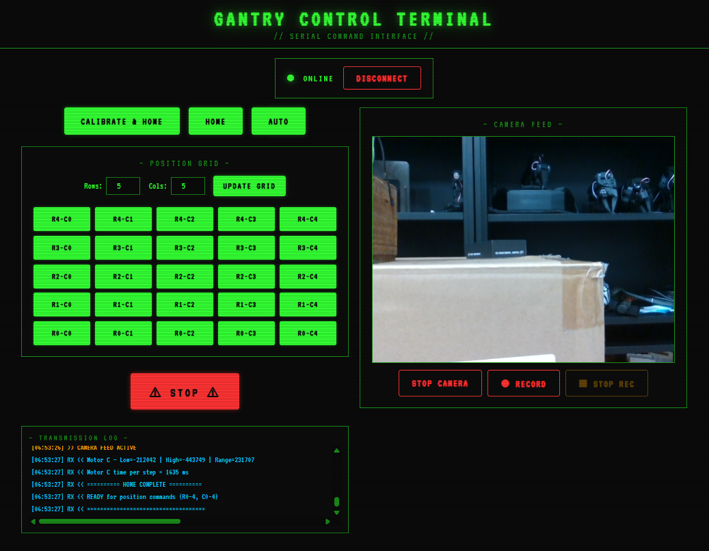

Operation and Interface
Below is the overview video of the working of the system. The system has several key functionalities that help the system perform reliably and efficiently.
- 1. Home: Homes all the motors to their respective limit switches.
- 2. Calibration: Calibrates all the motors to their respective limit switches.
- 3. Manual Positioning: Moves the motors to the desired position.
- 4. Auto Stepping: Moves the motors in a snake/zigzag pattern across the entire grid.
- 5. Emergency Stop: Stops all the motors.
- 6. Camera Feed: Streams live video from a connected webcam.
- 7. Video Recording: Records camera feed to .webm files with timestamped filenames.
- 8. Grid update: Updates the grid dynamically according to user input.
- 9. Transmission Log: Logs all the transmission data between the Arduino and the drivers.
Operating Modes
The interface provides access to the following operating modes:
Homing (H)
- Homes all motors to their respective limit switches.
- Zeros positions.
Calibration (C)
- Homes all active motors to their respective lower limit switches.
- Zeros all position counters.
- Simultaneously jogs all motors toward their upper limit switches.
- Records upper limit positions and computes travel range for the X and Z axes.
- Saves calibration data to EEPROM.
- Re-homes all motors and zeros positions again.
Manual Positioning (RC)
Two-digit serial command: first digit = row (Z axis - Motors A/B), second digit = column (X axis - Motor C).
- Example:
23→ move to Row 2, Column 3. - Motors A/B move to the desired row position through vertical motion.
- Motor C moves to the desired column position through horizontal motion.
Auto Stepping (A)
Performs a snake/zigzag sweep across the entire grid:
Row 1: C5 ← C4 ← C3 ← C2 ← C1 ← C0 (backward sweep)
Row 0: C0 → C1 → C2 → C3 → C4 → C5 (forward sweep)
Stop (X)
Stops all the motors immediately. Motor C will complete its current move before stopping. (So it doesnt loose track of its position, since it operates in velocity mode).
Camera Feed
This provides a live feed from the webcam connected to the system. It is useful for monitoring the system and ensuring that it is operating correctly. It also facilitates the recording of videos and saving them immediately to the system.
HMI Web Interface (HMI/)
A browser-based control panel connecting to the Arduino via the Web Serial API (Chrome/Edge only).

Features
| Feature | Description |
|---|---|
| Serial Connection | Connect/disconnect to Arduino at 38400 baud |
| Command Buttons | Calibrate & Home, Home, Auto, Emergency Stop |
| Dynamic Position Grid | Configurable rows × columns grid; click any Rx-Cy button to send position command |
| LED Signal Toggle | Enable/disable the SO1 LED blink feature |
| Transmission Log | Live feed of all TX (sent) and RX (received) serial messages |
| Camera Feed | Streams live video from a connected webcam |
| Video Recording | Record camera feed to .webm files with timestamped filenames |
https://github.com/user-attachments/assets/2300ad33-0bbf-4218-a0a2-44df9f3044bd
LED ON/OFF — Nozzle simulated via LED signaling:
https://github.com/user-attachments/assets/69bd8a09-ef32-48e5-af23-948bd1f90b90
Tip: Set your browser's default download directory to a
recordings/folder for organized video storage.⚠ Warning: Opening the Arduino Serial Monitor while the HMI is connected (or vice versa) will reset the Arduino. Use one interface at a time.